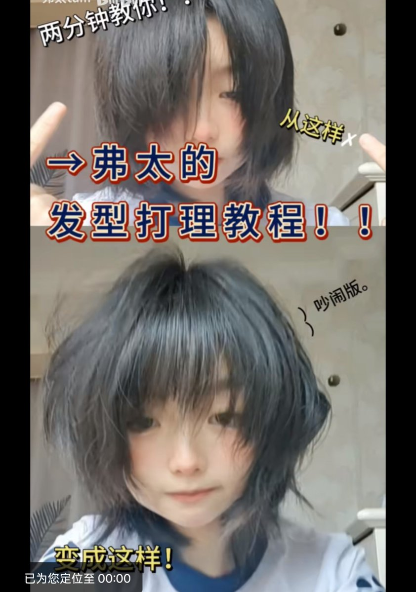

𝘠𝘶𝘮𝘦𝘬𝘢 ✨🐰
@YMKxxxxxxxx
@Mimiaomc 前段时间是看到这个视频才想买的，虽然是大沙发金毛狮王效果会很有限，但出个门打理还是很有用的。担心伤头发的话可以用护发精油，一定要带热防护的那种。然后产品的话，推荐lena 大概159元紫色的那一款
【一期十分吵闹的头发打理教程-哔哩哔哩】
https://t.co/i5SRy3SkRf

MM 喵了个
@Mimiaomc
@YMKxxxxxxxx 猫猫之前想用，但听说伤头发然后产品参差不齐就没买